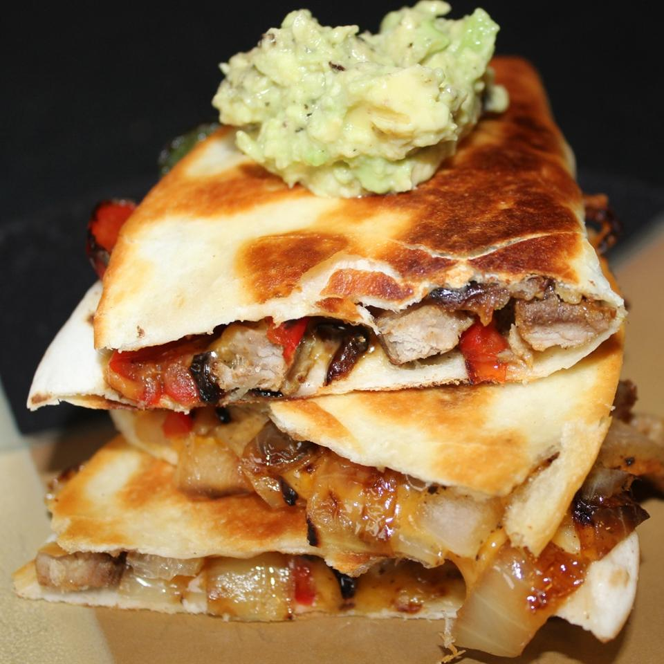

Fajita Quesadillas

Description
Fajita Quesadilla dish made with leftover steak. Measurements are approximate and can be changed based on ones preference. Served with salsa, guacamole, and sour cream. Receipe is for four people.
Reference
Ingredients
- 2 tbsp of vegetable oil
- 1/2 onion, sliced
- 1/2 red bell pepper, sliced
- salt to taste
- 4 flour tortillas
- 1/2 pound cooked steak, cut into 1/4-inch pieces
- 1-cup shredded Mexican cheese blend
Steps
- Heat 2 teaspoons oil in a 10-inch skillet over medium heat; cook and stir onion and red bell pepper in the hot oil until onions are softened, 5 to 10 minutes. Season mixture with salt and transfer to a bowl.
- Brush 1 side of each tortilla with remaining oil. Place 1 tortilla, oil-side down, in the same skillet; sprinkle with 1/2 the steak, 1/2 the onion mixture, and 1/2 the Mexican cheese mixture. Place a second tortilla, oil-side up, onto cheese layer, pressing down with a spatula to seal.
- Cook quesadilla over medium heat until cheese melts and tortillas are browned, 3 to 4 minutes per side. Remove quesadilla from skillet and cut into wedges. Repeat with remaining ingredients for second quesadilla.